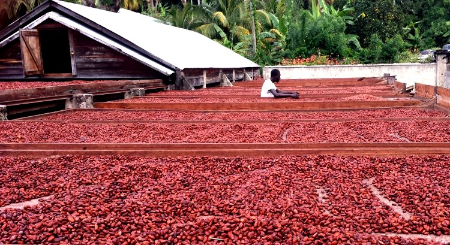
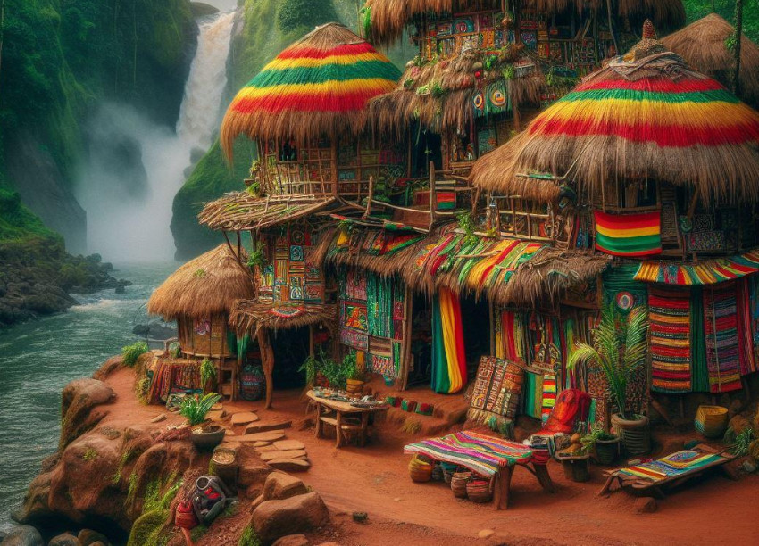
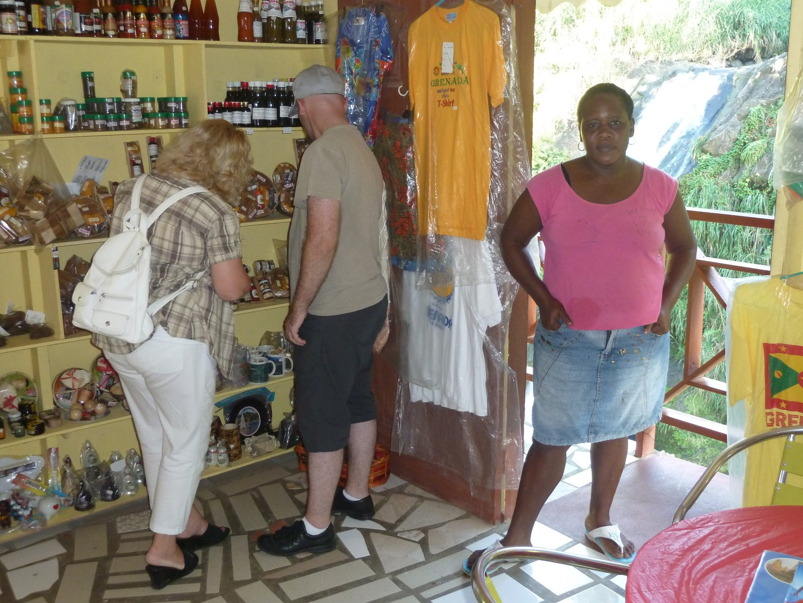

Freedom to experience Grenada’s rich African Heritage
Uhuru
Embark on a journey through Grenada’s African-centered history and culture. Delve into the island’s profound African legacy, tracing its roots back to the era before European colonization. Explore historical landmarks and encounter well-preserved artifacts that offer a window into Grenada’s storied past. Expand your knowledge and deepen your appreciation for the island’s captivating history and culture.
Our ancestors have left evidence of their presence locally and regionally for us to discover. Research has brought so much to the surface and exposed some left in plain sight.
Follow in the footsteps of our forebears, from their arrival to their lives on the plantations and beyond.
Cocoa Tea
From the Plantation to the rich Flavours of the Cocoa plant
Renowned for producing premium cocoa, Grenada is celebrated among chocolate connoisseurs. The Olmecs, an ancient African civilization predating the Mayans, Aztecs, and Columbus’s arrival in the Americas, were pioneers in crafting beverages from cocoa beans for medicinal and ceremonial use.
The Mayans concocted “xocolatl,” a robust, frothy drink meaning ‘bitter water,’ by roasting and grinding cacao beans, then blending them with chilies, water, and cornmeal. Hernán Cortés introduced cocoa to Spain in 1528, a gift from the Aztec emperor

Indulge in the exquisite flavours of cocoa by sampling cocoa tea or Grenada chocolate. Enhance your knowledge of cocoa by learning about the intricacies involved in its growth, harvesting, and processing. Gain insights into the various products made from cocoa.
Join us on this enlightening journey to experience the flavours of cocoa and learn about its production and products.
Rasta Livity
An African way of Life indigenous to the Caribbean
Rastafari as a cultural expression has maintained their African Heritage in their way of life called Rasta Livity. Rastafari emerged in Jamaica before the 1930s as an antidote to the after effects of colonization and slavery.
Rasta express their oneness with humanity and everything that exist by seeking the spiritual connection to the Most High, the universe and each other. The group is active demanding repatriation to a united, border less Africa as well as reparation for colonization also slavery and the legalization of the sacred herb.

Rasta Livity has found resonance globally as individuals seeking alternative Lifestyles discover the way of life practiced by Rastas. The Livity encompasses spirituality, self-reliance, diet, music, language as disciplines practiced by Rastas.
Village Life
The Ubuntu spirit resides in Grenadian village culture
The essence of a group or nation is their culture a blend of traditions and practices handed down by their ancestors. As Africans domiciled of an ex slave Plantation island we have preserved our heritage in our villages. The rural regions of Grenada, often referred to as the country is where Grenadian culture is celebrated and maintained as a way of life.
Fishing and Farming plays a major role in daily Village life as a domestic food supply. Fresh caught fish, organically grown fruit, vegetables and some of the finest herbs also spice are the main ingredients in most of the local dishes. Grenada economy is rooted in Agriculture which made the island famous for its Spice export.

The essence of Grenadian culture and tradition thrives within its rural villages. These locales offer an ideal retreat for visitors seeking an authentic experience of Grenadian hospitality amidst tranquil surroundings. This distinctive ambiance is exclusive to the Spice Island of the Caribbean.
Famous Grenadian
Explore their Heritage
Despite its small size and population, Grenada has fostered numerous internationally recognized figures. While some may not be household names, their remarkable achievements have garnered global acclaim.
Many of these individuals hail from the rural regions of Grenada, often referred to as the country. Exploring their backgrounds and tracing their footsteps in their native environment offers insights into the influences that shaped and motivated them. Among the notable figures are Maurice Bishop, Slinger Francisco, and Mrs. Little, the mother of Malcolm X, to name just a few.
Explore the backgrounds and heritage of some of the most recognized individuals with Grenadian roots. Walk in their footsteps and experience what influenced and shaped them to becoming exceptional individuals.
Diamond Lifestyle
A Luxurious Experience of a Tropical paradise
Grenada, a gem of an island, boasts a vibrant cultural tapestry and a melting pot of communities. This multicultural blend shapes the island’s everyday life, offering a glimpse into the lifestyles of its affluent residents. Explore exclusive enclaves, from gated communities to secluded villas and mansions.
Grenada’s serene atmosphere and amiable locals enable a lifestyle of privacy and luxury in remote corners of the island.
As a favored haven for yachting enthusiasts, Grenada’s strategic location and exceptional services cater to the maritime lifestyle. Experience the opulent life of seafarers as they savor their time ashore.
Select from a variety of dining options and settings, from beachfront to rain forest retreats. As our guest, you’ll receive expert recommendations to fulfill your culinary desires. Personalized restaurant or catering services are available upon request.
For further details or to include additional activities in your Grenada tour, please reach out to me.